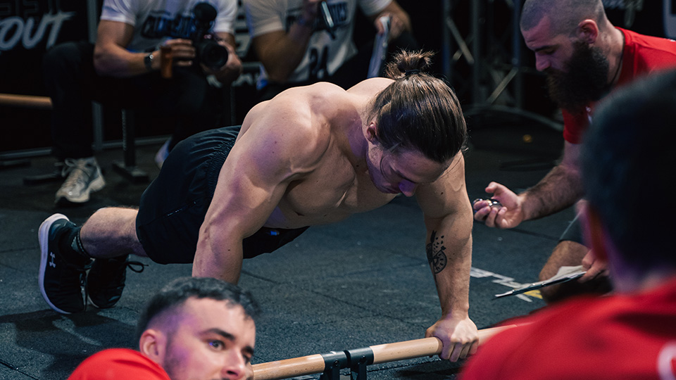

Sets & Reps
Kaj je Sets & Reps? Sets & Reps je podvrsta calisthenicsa, ki se sastoji osnovnih vaj kot so zgib, skleca, počep, dip itd. Ponavadi so vaje sestavljene v rutini
in nato se tekmovalci tekmujejo ena na ena na štoparico. Tisti, ki najhitreje konča zmaga. Imaš pa tudi "Max Rep" tekmovanja oz "Power", kar pomeni, da so ponavadi
3 osnovne vaje: Muscle up, Pull up, Dip. Odvisno na tekmovanje so pull upi in dipi lahko z dodatno kilažo, muscle upi so pa ponavadi vedno brez.
Primer 1 na 1 boja in max rep tekmovanja.
Kako trenirati Sets & Reps? Sets & Reps treningi so bazirani na zelo visokem številu ponavljanj. Jaz npr. imam po 1020 ponavljanj v enem treningu, kar je za določene ljudi
veliko. Vse kar potrebuješ praktično so samo osnovne vaje in to je to. Nato pa nenormalno discplino, dolge treninge, ter vztrajnost za več let, da lahko uspeš.

Primer Sets & Reps atleta, ki dela sklece.